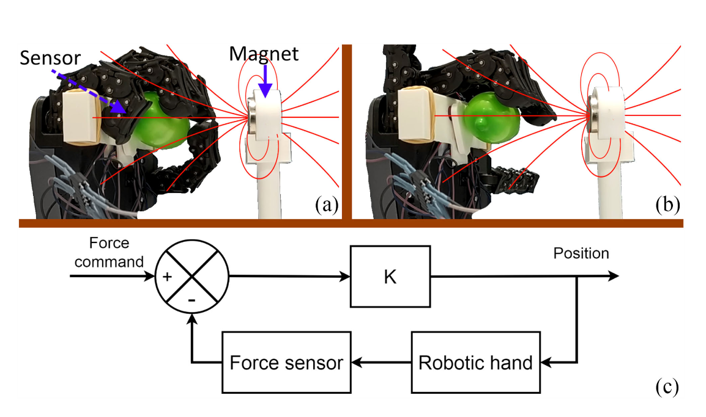

📃Gradiometric Magnetic FS 리뷰
- 기존 자기 힘 센서는 외부 자기장 간섭에 취약하여 측정 정확도가 떨어집니다.
- 본 논문은 다중 픽셀을 이용해 자기장 구배를 측정함으로써 외부 자기장에 면역인 새로운 센서 디자인을 제시합니다.
- 이 센서는 외부 자기장 영향 없이 우수한 힘 분해능과 온도 보상 기능을 유지하며, 로봇 손 적용 시 강건한 성능을 입증했습니다.
1 Brief Review
본 논문은 로봇 손과 그리퍼를 위한 미세 자장(stray magnetic fields) 간섭에 강한 자기력 센서(Gradiometric Magnetic Force Sensor Immune to Stray Magnetic Fields)를 제안합니다. 기존의 자기력 센서는 엘라스토머에 내장된 자석의 변위를 단일 자기 픽셀(magnetometer)로 측정하여 3D 힘을 감지하는 방식이었습니다. 이 방식은 미세 자장에 매우 취약하여, 지구 자기장, 모터 또는 근처 자석으로 인한 자기장이 측정값에 직접 유입되어 힘 측정 정확도를 저해하는 문제가 있었습니다.
제안된 센서는 이러한 문제를 해결하기 위해 ‘gradiometric’ 개념을 도입합니다. 단일 칩 패키지 내에 여러 개의 자기 픽셀을 통합하여, 절대 자기장 값이 아닌 픽셀 간의 자기장 차이, 즉 자기장의 gradient를 측정합니다. 프로토타입은 repurposed MLX90372 칩을 사용했으며, 이 칩은 하나의 패키지에 4개의 자기 픽셀(각 픽셀은 B_x, B_z 측정)을 포함합니다. 이 픽셀들은 약 2 mm 간격으로 배치되어 밀리미터 스케일에서 자기장 gradient를 측정합니다. 센서는 소프트 엘라스토머(Dragon Skin 20)와 그 안에 내장된 원통형 자석으로 구성됩니다. 외부 힘에 의해 엘라스토머가 변형되면 자석이 움직여 자기장 패턴이 변화하고, 이 변화가 다중 픽셀에 의해 감지됩니다.
센서의 신호 처리 과정은 다음과 같습니다.
- Sensitivity Correction: 온칩 온도 센서(T_{sensor}) 측정값을 사용하여 홀 효과의 민감도 변화 및 엘라스토머의 열팽창/강성 변화를 보정합니다. 보정된 자기장(B_{corr})은 다음과 같습니다: B_{corr} = B_{raw}(1 + \alpha\Delta T) + \beta\Delta T 여기서 \Delta T = T_{chip} - 35^\circ\text{C}이며, \alpha, \beta는 엘라스토머 특성 변화를 보상하는 상수입니다.
- Mean Removal: 4개 픽셀에서 측정된 B_x 성분들의 평균 B_{mean,x}와 B_z 성분들의 평균 B_{mean,z}를 계산하여 각 픽셀의 B_x, B_z 측정값에서 빼줍니다. 이는 균일한 미세 자장 성분을 제거하고 자기장의 차이(\Delta B_x/\Delta x, \Delta B_z/\Delta x 등 gradients의 유한 차분 근사)만 남깁니다.
- Feature Augmentation: 각 픽셀의 자기장 벡터 크기 B_{norm,i} = \sqrt{B_{x,i}^2 + B_{z,i}^2}를 계산하여 새로운 특징으로 추가합니다. 이 단계 후 총 12개의 특징 벡터가 생성됩니다.
- Polynomial Augmentation: 12개의 특징 벡터의 모든 2차 다항식 조합(상호항 포함)과 바이어스 항(1)을 생성하여 총 91개의 특징 벡터를 얻습니다.
- Inference: 91차원 특징 벡터에 캘리브레이션을 통해 얻은 91x5 크기의 가중치 행렬(M_{weights})을 곱하여 3D 힘(F_x, F_y, F_z) 및 2D 토크(T_x, T_y)를 출력합니다.
센서 캘리브레이션은 ATI nano17 레퍼런스 로드셀과 3축 이동 플랫폼을 사용하여 수행되었으며, 총 13,000개의 데이터셋을 기반으로 다항식 모델 가중치 행렬을 학습했습니다. 학습 결과는 F_z (0.996), F_x (0.966), F_y (0.949)의 높은 결정계수(R²)를 보여주었습니다.
핵심 실험 결과는 다음과 같습니다.
- 미세 자장 내성 (Stray-Field Immunity): ±2 mT의 균일 외부 자기장 하에서 테스트 결과, 미세 자장 오차는 전체 스케일(2 N)의 0.3% 이내로 제한되었습니다. 이는 기존 단일 픽셀 방식(에뮬레이션 결과 약 20% 오차) 대비 약 두 자릿수 향상된 성능입니다.
- 힘 분해능 (Force Resolution): 무부하 상태에서 2.7 mN의 RMS 힘 분해능을 달성했습니다. 이는 로봇 촉각 센서 요구 사양(10 mN)을 만족하는 수준이며, 미세 자장 내성을 제공함에도 기존 센서와 경쟁적인 성능입니다.
- 열 드리프트 보상 (Thermal Drift Compensation): 0–50°C 범위에서 온칩 온도 센서를 활용한 보정 알고리즘이 엘라스토머 특성 변화로 인한 힘 측정값의 드리프트를 효과적으로 보상함을 입증했습니다.
- 로봇 핸드 통합 (Robotic Hand Integration): qb SoftHand 로봇에 센서를 통합하여 근처의 강한 자석(미세 자장 약 3 mT) 존재 하에서도 풍선을 안정적으로 잡는 힘 제어를 시연했습니다. 반면 기존 단일 픽셀 방식은 미세 자장에 의해 제어가 실패했습니다.
결론적으로 본 논문은 기존 자기력 센서의 장점(3D 힘 감지, 부드러움, 소형, 비용 효율성)을 유지하면서, 다중 픽셀 gradiometric 개념을 통해 실세계 환경에서 치명적인 약점이었던 미세 자장 간섭 문제를 효과적으로 해결하여 로봇 힘 감지의 강건성을 크게 향상시켰습니다.
2 Detail Review
그래디오메트릭 자기 힘 센서 심층 리뷰: 외란 자기장에 면역인 로봇 손/그리퍼용 촉각 센서
2.1 서론
로봇이 인간 수준의 섬세함으로 물체를 다루려면 촉각 센서를 통한 정밀한 힘 제어가 필수적입니다. 시각 센싱만으로는 한계가 있기 때문에, 접촉 지점에서의 수직(normal) 및 수평 방향(tangential) 힘 정보를 얻어 미끄럼 감지와 정밀 힘 제어를 수행해야 합니다. 이를 통해 로봇은 깨지기 쉬운 물체도 안전하게 잡거나, 미지 물체의 무게를 추정하고, 사람과의 안전한 상호작용도 가능해집니다. 인간 촉각의 성능을 고려한 로봇용 촉각 센서의 목표 사양으로는, 약 10 mN(1 그램 정도 무게) 수준의 힘 분해능, 5 mm 간격의 공간 해상도, 3축(force 3D 벡터) 측정, 1000:1의 다이나믹 레인지, 1 ms 응답속도 등이 제시되어 있습니다. 또한 센서 표면은 피부처럼 부드러워야 하며 접촉면적을 넓히기 위해 일정 수준의 유연성(compliance)을 가져야 합니다. 관절에 장착되는 경성 6축 힘-토크 센서와 달리, 손가락 끝 피부 표면에 분산 배치될 부드러운 촉각 센서 기술이 요구됩니다.
현재까지 다양한 촉각 센서 기술들이 연구되어 왔습니다. 예를 들어, 유체(microfluid) 압력 또는 저항 변화를 이용한 센서들은 손가락 전체를 둘러싼 분산형 촉각 피부를 구현할 수 있지만, 국소적인 3축 힘을 직접 측정하지는 못합니다. 카메라 기반의 광학 촉각 센서(예: GelSight, NeuroTac)는 높은 해상도로 접촉면 변형을 측정하여 물체의 패턴이나 질감을 인식할 수 있으나, 부피가 크고 데이터 처리량이 많으며 전력 소모도 상당합니다. 포토다이오드 4분할 검출기를 이용한 상업 센서(구 OptoForce 등)는 카메라보다 경량화했으나 여전히 수백 mW 이상의 전력을 소모하며, 현재는 단품 판매가 중단되었습니다. 자기 센서 기반 촉각 센서는 이러한 대안으로 주목받아 왔습니다. 자기장 방식은 일반적으로 작은 3축 자기 센서 칩과 자석, 그리고 탄성체(elastomer)로 구성되며, 힘이 가해지면 자석이 미세 변위하여 주변 자기장이 변하고 이를 측정해 3축 힘을 계산합니다. 이 방식은 구조가 단순하고 비용 효율적이며, 한 개의 칩만으로도 3축 힘을 감지하는 컴팩트한 패키지를 구현할 수 있어 다수의 촉각 픽셀(taxel) 배열에 적합합니다. 실제로 선행 연구들에서 단일 센서의 힘 분해능이 수 mN 수준(수직 1.42 mN, 전단 0.71 mN)에 도달하였고, 이를 2×2 배열로 확장한 사례나 4×4, 최대 24개의 센서를 손끝에 분산 배치한 자기 촉각 피부 구현까지 보고되었습니다. 이러한 자기 촉각 센서는 3차원 힘 벡터를 높은 감도로 측정하고 소형화가 가능하며, 표면을 부드러운 실리콘 등의 탄성 재질로 만들어 인체 피부와 유사한 촉감을 가지게 할 수 있다는 장점이 있습니다.
그러나 기존의 단일 자기 센서 기반 촉각 센서는 치명적인 약점이 있었는데, 바로 외부 자기장 교란(stray magnetic field)에 매우 민감하다는 점입니다. 센서가 측정하는 자기장은 원래 탄성체 내부 자석의 위치 변화로 인한 것이지만, 주변에 존재하는 다른 자석이나 전류에 의한 자기장이 있으면 센서는 이를 구분하지 못하고 합쳐서 측정해버립니다. 예컨대 지구 자기장(약 50 μT)이나 로봇 구동 모터, 가까운 자석에서 발생하는 필드는 센서 출력에 그대로 더해져, 실제 접촉력과 무관한 오차를 발생시킵니다. 실험실이 아닌 실제 환경의 로봇에는 이런 자속 교란이 흔하므로, 기존 자기 촉각 센서를 로봇에 탑재할 경우 신뢰성 문제가 제기되어 왔습니다. 일부 연구에서는 코일을 이용한 유도식 보상 방법 등으로 저주파 외란을 줄이려 했으나, 센서 크기가 1 cm 이상 커지고 주변 금속에도 민감한 단점이 있었습니다. 이러한 배경에서, 2022년 RA-Letter 논문 “A Gradiometric Magnetic Force Sensor Immune to Stray Magnetic Fields for Robotic Hands and Grippers”는 외란 자기장에 영향을 받지 않는 새로운 자기 촉각 센서 설계를 제안하였습니다. 이 센서는 다중 픽셀 자기 센서 구조를 통해 자기장의 기울기(gradient)를 측정함으로써 균일한 외부 자기 신호를 제거하는 방법을 사용합니다. 이하에서는 해당 논문의 기술적 내용과 기여를 심층 분석하고, 기존 기술과의 비교, 한계점 및 향후 발전 방향을 논의합니다.
2.2 기술적 개요

그림 1. 단일 픽셀 기반 자기 힘 센서(위)와 다중 픽셀 그래디오메트릭 자기 힘 센서(아래) 개념도 비교. 기존 방식은 하나의 3축 자기 센서로 자석 변위를 측정하므로 외부 균일 자기장 B_{\text{stray}}에 취약하여 힘 출력이 교란된다(왼쪽). 반면 새로운 다중 픽셀 센서는 동일한 패키지 내 4개의 자기 센서 픽셀을 배치하고, 내부적으로 차동 측정(differential measurement)**을 수행하여 균일한 외란 자기장을 상쇄한다(오른쪽).*
그래디오메트릭 자기 힘 센서(GMFS)는 하나의 센서 모듈 안에 여러 개의 미소 자기 센서 픽셀을 가까이 배치하여, 출력 신호 간 차분(differential)을 취하는 방식으로 동작합니다. 논문에서는 Melexis 사의 Triaxis® 기반 MLX90372 칩을 활용했는데, 이 칩은 5 mm × 4.3 mm × 0.9 mm 크기의 작은 패키지 안에 2개의 CMOS 다이(die)를 담고 있고, 다이마다 2개의 자기 픽셀이 배열되어 있어 총 4개의 픽셀을 제공합니다. 픽셀 간 거리는 약 2 mm에 불과하여, 실질적으로 수 mm 공간 크기에서의 자기장 구배(gradient)를 측정할 수 있습니다. 각 픽셀은 2축의 자기장 성분(칩 표면에 수직인 B_z 축 성분과 한 방향의 수평 성분 B_x)을 측정합니다. (※ MLX90372 칩은 두 번째 수평 축 B_y는 출력하지 않지만, 이는 설계상 큰 문제는 없었습니다.) 이러한 멀티픽셀 자기 센서 IC 위를 부드러운 실리콘 계열 탄성체(논문에서는 Smooth-On사의 Dragon Skin 20)를 덮고 그 내부에 소형 원형 자석(네오디뮴 자석, 축 방향 자기화)을 매립합니다. 이 구조는 기존 단일 자기 촉각 센서와 유사하나, 한 패키지 안에 복수의 센서 픽셀이 있다는 점이 다릅니다. 외부에서 탄성체 표면에 힘이 가해지면, 자석이 미세하게 움직이면서 주변 자기장 분포가 변합니다. 이 변화를 바로 아래 배치된 4개의 픽셀이 각기 다른 위치에서 감지하여, 자석과 픽셀들 간 위치 관계 변화를 읽어내는 것입니다.
자석의 변위가 수직 방향일 때는 모든 픽셀에서 자장 세기가 거의 균일하게 증가하거나 감소하지만, 서로 인접한 픽셀의 출력 차이를 보면 특히 B_x 성분의 공간 구배(∂B_x/∂x)가 뚜렷하게 나타납니다. 반대로 자석이 측면 방향으로 이동(전단 힘 작용)하면 픽셀마다 자석과의 거리가 달라져서 B_z 성분 분포에 차등이 생기고, 주로 ∂B_z/∂x 성분이 변화합니다. 다시 말해, 4개의 픽셀이 위치별 자기장 변화를 동시에 측정함으로써 자석의 3차원 이동을 추정할 수 있습니다. 그림 1의 개념도에서 보이듯, 이러한 공간 구배 신호는 공간 전체에 고르게 미치는 외란 자기장에 대해서는 모두 동일하게 나타나므로, 픽셀 간 평균값을 빼주면 상쇄됩니다. 결과적으로 센서는 자석의 위치 변화로 인한 국소적인 자기장 불균일 신호만 추출하게 되어, 외부에서 유입되는 균일한 자기 간섭에는 거의 영향을 받지 않게 됩니다.
한편, 기계적 구조 측면에서 이 센서는 원통형의 평평한 실리콘 쿠션을 사용하였습니다. 이전 연구들에서는 피라미드형 돌기나 돔 형태의 탄성체를 쓰기도 했지만, 평평하고 넓은 접촉면을 주면 접촉 시 자석이 기울어지는 것을 줄이고 물체를 감싸는 안정적인 접촉이 가능하다는 이점이 있습니다. (자석 주변 탄성체를 육면체로 만들고 그 위에 얇은 피부를 덮는 형태도 대안이 될 수 있다고 합니다.) 자석은 탄성체 내부에 매립되어 있기 때문에 외부와 직접 접촉하지 않으며, 센서가 철제 물체에 달라붙는 일도 방지할 수 있습니다.
이 센서의 설계에서 중요한 트레이드오프로 최대 측정 힘 범위(full-scale force)와 민감도(signal-to-noise ratio, SNR)를 들 수 있습니다. 일반적으로 더 큰 자석이나 자속이 강한 자석을 쓰면 픽셀이 얻는 자기 신호가 커져 SNR은 향상되지만, 탄성체의 강성과 두께에 따라 센서가 견딜 수 있는 최대 힘에는 큰 변화가 없었습니다. 반면 자석과 센서 간 거리(airgap)를 줄이면 신호는 커지지만 자석이 움직일 수 있는 물리적 여유가 줄어들어 최대 측정 힘이 감소합니다. 탄성체의 경도(hardness)도 유사한 trade-off를 보이는데, 더 단단한 재료일수록 동일 힘에 자석 변위가 작아져 신호 변화량이 작아지므로 감도는 떨어지지만, 큰 힘에도 덜 변형되므로 최대 측정 범위는 커집니다. 탄성체의 지름(diameter) 역시 영향을 주는데, 지름을 키우면 동일 힘이 넓은 면적으로 분산되어 자석 아래 국부 압력이 낮아지므로 신호가 줄어들지만 대신 더 큰 힘까지 버틸 수 있습니다. 논문에서는 로봇 손가락용으로 약 2 N 정도의 풀스케일 힘을 목표로 설계를 최적화했고, 이는 실제 서비스 로봇 손끝이 깨지기 쉬운 물체(예: 달걀)를 다룰 때 사용하는 힘 범위와 유사한 수준입니다.
2.3 주요 기여
이 논문이 제안한 그래디오메트릭 자기 힘 센서는 기존 기술 대비 다음과 같은 주요 혁신과 성능 개선을 달성했습니다.
외란 자기장 억제를 위한 다중 픽셀 차동 설계: 단일 3축 홀 센서로 구성된 기존 자기 촉각 픽셀은 외부 자기 교란에 취약하여, 주변에 자석이나 전류가 있을 경우 측정 힘 값이 크게 왜곡되었습니다. 반면 본 연구의 센서는 4개의 센서 픽셀이 칩 내부에서 밀집 배열되어 있어, 모든 픽셀에 공통으로 인가되는 균일 자기장을 서로 소거할 수 있습니다. 즉, 각 픽셀의 출력에서 공통 성분(평균 값)을 빼면 자석 위치 변화로 인한 국부적인 변화만 남기 때문에, 외부 자기장의 영향 없이 오직 접촉력에 의한 신호만을 읽어낼 수 있게 됩니다. 이러한 원리는 Helmholtz 코일로 ±2 mT의 강한 자기장을 걸어 실험한 결과에서 잘 나타났습니다. 제안된 센서는 ±2 mT의 균일 외란 필드가 존재해도 출력 힘 오차가 전체 범위의 약 0.3%에 불과했지만, 동일 조건에서 기존 단일 픽셀 방식으로 동작하도록 설정하면 약 20%에 달하는 큰 오차가 발생했습니다. 이는 두 자릿수(약 100배) 이상의 외란 내성 향상으로, 로봇에 센서를 장착한 상황에서 모터나 주변 자석으로 인한 잘못된 힘 피드백 문제를 획기적으로 줄일 수 있음을 의미합니다.
고차 모델 기반 신호처리 및 실험적 검증: 여러 픽셀의 자기장 데이터를 종합하여 3축 힘으로 변환하기 위해, 저자들은 다항 회귀 모델을 이용한 신호처리 체계를 구축했습니다. 4개 픽셀로부터 얻은 B_x, B_z 값들에 대해 우선 온도에 따른 센서 감도 변화를 2차 보정하고, 각 축 성분의 평균을 제거하여 자기장 구배 성분을 추출했습니다. 이어서 각 픽셀의 B 벡터 크기(norm)까지 포함하여 픽셀당 3개의 특징을 만들고(총 12차원), 이들을 2차까지 조합한 다항식 특징 91개를 생성하였습니다. 마지막으로 이 91차원 벡터에 대해 선형 가중치 행렬(91×5)를 곱하여 5개의 출력(3축 힘 F_x, F_y, F_z 및 수평면내 2축 토크 T_x, T_y)를 계산하도록 모델을 설계했습니다. (자석의 축 대칭성 때문에 수직 방향 토크 T_z는 감지할 수 없음도 언급하고 있습니다.) 이러한 모델의 가중치 파라미터는 실제 힘 데이터를 이용해 학습되었는데, ATI Nano17 6축 로드셀을 장착한 3축 스테이지로 센서를 눌러가며 약 13,000개의 다양한 3D 위치에서 센서 출력과 참조 힘을 측정한 대규모 캘리브레이션을 수행했습니다. 수집된 데이터에 대해 허버 손실(Huber loss)과 L1 정규화를 사용한 확률적 경사하강법으로 최적의 매핑 가중치를 학습한 결과, 모델이 예측한 힘과 로드셀이 측정한 힘 간 상관도가 수직 힘 F_z에 대해 R^2 = 0.996, 수평 힘 F_x, F_y에 대해서도 0.966 및 0.949로 매우 높게 나타났습니다. 이는 3축 전체에 걸쳐 정밀한 힘 복원이 가능함을 보여주며, 마찬가지로 2축 토크도 높은 상관도로 일치함을 확인했습니다. 또한 센서 IC 내부의 온도 센서를 활용한 1차 보정 알고리즘으로 온도 변화(0–50 ℃)에 따른 출력 드리프트를 최소화하여, 열 팽창으로 인한 오차도 효과적으로 보상했습니다.
고해상도 및 고감도 힘 감지 성능: 그래디오메트릭 설계는 신호 간 차동 동작으로 인해 이론적으로 신호 대 잡음비(SNR)가 낮아질 우려가 있었습니다. 매우 인접한 픽셀들에서 측정하는 자기장 분포 차이는 절대값에 비해 작기 때문에, 미세 신호를 증폭하는 과정에서 잡음 영향이 커질 수 있기 때문입니다. 그러나 논문 결과에 따르면, 제안된 센서는 약 2.7 mN (0.0027 N)의 힘 분해능(RMS 기준)을 달성하여, 인간 촉각 수준으로 제시된 10 mN 목표치를 훨씬 뛰어넘고 기존 단일 픽셀 자기 센서들과도 대등한 수준의 해상도를 유지했습니다. 이는 센서 출력 힘 0.3 그램 미만의 변화도 구별할 수 있는 민감도에 해당합니다. 흥미로운 점은, 다중 픽셀의 신호 결합으로 오히려 SNR을 향상시켜 이러한 성능 손실을 보완했다는 것입니다. 즉, 픽셀들의 출력을 조합함으로써 잡음 평균화 효과를 얻었고, 결과적으로 외란 자기장에 대한 면역성을 확보하면서도 높은 힘 감도를 유지할 수 있었습니다. 전체 센서의 크기도 5×5×5 mm 정도로 매우 작아 로봇 손가락 내부에 쉽게 내장할 수 있으며, 한 패키지에 센서 소자와 신호처리 회로 일부가 집적되어 있어 소형 모듈로 대량 생산하기에 적합한 형태를 보여주었습니다.
2.4 기술적 분석
1) 기존 자기 촉각 센서와의 비교: 그래디오메트릭 자기장 센서는 기존의 단일 홀센서 기반 촉각 픽셀들과 비교해 근본적인 전자기적 이점을 제공합니다. 과거의 자기 촉각 센서들은 Melexis MLX90393과 같은 단일 픽셀 3축 홀IC를 사용하였고, 여러 장을 배열하여 촉각 피부를 구성하더라도 각 픽셀이 개별적으로 외란 필드에 취약하다는 한계가 있었습니다. 반면 본 연구는 동일 칩 내에 복수의 센서를 넣어 외란을 장비적(하드웨어적으로 상쇄)하는 개념을 적용하여 이 문제를 해결했습니다. 이 접근법은 추가적인 외부 보정장치 없이도 센서 자체가 환경 자기 노이즈를 견딜 수 있는 내성을 가지게 했다는 점에서 가치가 큽니다. 그 결과, 센서를 로봇에 통합할 때 모터, 스피커, 전류선 등의 영향으로 센서가 오작동하거나 재보정해야 하는 빈도를 크게 줄여줄 것으로 기대됩니다.
또한 그래디오메트릭 방식은 기존 자기 센서의 장점은 그대로 유지합니다. 즉, 접촉면이 부드러운 탄성체로 이루어져 있어 사람 피부처럼 물체와 안정적으로 밀착할 수 있고, 센서 단가도 카메라나 광센서에 비해 낮으며, 소모 전력도 매우 적습니다. Optical 센서의 경우 외란 자기장 문제는 없지만 여러 개의 광학 부품과 카메라로 구성되어 가격이 센서 한 개당 수백 달러 수준으로 높았던 반면, 자기장 센서는 수 달러 수준으로 대량 생산이 가능합니다. 실제로 Meta(Facebook) AI에서 발표한 ReSkin과 같은 개방형 자기 촉각 센서는 개당 6달러 정도의 저가에 제작할 수 있으나, 외란 자기장에 취약하다는 한계가 지적되었습니다. 본 논문의 연구는 이러한 실용적 약점을 근본적으로 개선함으로써, 자기 촉각 센서 기술을 연구실 단계에서 산업 현장으로 가져가는 데 기여할 것으로 보입니다. 아울러 Honeywell의 FMA 시리즈와 같은 상용 소형 힘 센서는 압전저항 소자를 이용해 작은 힘을 정밀 측정하지만 수직 방향 힘만 감지할 수 있는 제약이 있는데, 이 그래디오메트릭 센서는 한 개 모듈로 3축 힘을 모두 측정할 수 있어 한층 풍부한 촉각 정보를 제공합니다. 종합하면, 제안된 센서는 기존 자기 촉각 센서들의 장점(3D 벡터 측정, 부드러운 표면, 저가격, 소형화)을 그대로 가지면서도 가장 큰 약점이던 외란 필드 민감도를 극복한 균형 잡힌 혁신이라고 평가할 수 있습니다.
2) 그래디오메트릭 설계의 장단점: 다중 픽셀을 이용한 그래디오메트릭 구조는 하드웨어적으로 보다 복잡합니다. 단일 센서로 구현하던 것을 4배수의 센서로 구현하므로, 칩 설계나 데이터 처리 측면에서 신호 경로가 늘어나고 보정해야 할 요소가 많습니다. 예를 들어 4개 픽셀의 상대 정렬이나 감도 편차 등을 고려한 보정이 선행되어야 하고, 3축 힘을 얻기 위해 다차원 다항식 연산을 수행해야 합니다. 논문에서도 센서 출력을 실제 힘으로 변환하기 위해 13,000개나 되는 캘리브레이션 데이터를 모아 학습시킨 바 있는데, 이 정도의 데이터 수집 및 모델 트레이닝 과정은 센서 제작 후 매번 수행하기 어려우므로 양산 시에는 모델 일반화 또는 공장 초기보정 등의 현실적인 방안이 필요할 것입니다. 다만 저자들은 현재의 신호처리 알고리즘은 오프라인(PC)으로 구현되었지만, 충분히 경량화 가능하며 칩에 통합하거나 마이크로컨트롤러로 실시간 처리하는 것도 가능하다고 언급하고 있습니다. 또 하나의 제한점으로는, 이 센서가 자석의 수평 회전에 대해 대칭 구조이므로 회전(z축 토크) 감도는 거의 없다는 점입니다. 즉, 물체를 비틀거나 하는 토크까지 한 픽셀로 측정하는 것은 어렵고, 이러한 6축 정보까지 필요할 경우 센서를 여러 개 배치하거나 구조를 수정해야 할 것입니다. SNR 측면의 단점도 이론적으로 존재하는데, 균일한 자기장은 제거되나 그만큼 유용신호 성분도 차분으로 인해 감소하므로, 주어진 회로에서의 잡음 비중이 커질 수 있습니다. 논문에서는 멀티픽셀 신호 결합으로 이 문제를 어느 정도 만회했지만, 근본적으로 단일센서 대비 신호 여유(margin)가 줄어드는 것은 감수해야 합니다. 따라서 향후에는 홀 센서 대신 TMR이나 GMR 같은 고감도 자기 센서 소자를 픽셀로 활용하거나, 픽셀 수를 늘려 신호를 증폭하는 방식도 고려될 수 있습니다. 요약하면 그래디오메트릭 구조는 약간의 복잡성과 추가 보정 노력을 요구하지만, 그 대가로 실사용에 치명적이었던 외란 민감도를 해결하고 3축 벡터와 높은 해상도를 유지하게 해주는, 충분히 투자 가치가 있는 개선으로 볼 수 있습니다.
3) 로보틱 플랫폼 통합 가능성: 본 센서는 이미 소형 패키지로 구현되어 있어 로봇 손가락이나 그리퍼에 손쉽게 장착할 수 있습니다. 저자들은 시연을 위해 이 센서를 이탈리아 qbrobotics의 상용 qb SoftHand 로봇 손에 부착하고, 간단한 힘 제어 알고리즘을 적용하여 풍선을 살짝 쥐는 실험을 수행했습니다. 그 결과, 외란 자석이 없는 상태에서는 이전의 단일 픽셀 센서와 신형 센서 모두 풍선을 적절한 힘으로 잡았지만, 손 가까이에 자석을 가져다 대자 두 접근법의 차이가 극명하게 드러났습니다. 단일 픽셀 센서로 동작한 경우 자석의 필드 때문에 센서 출력이 오동작하여 로봇 손이 풍선을 놓쳐 버리거나 지나치게 힘을 주어 터뜨리는 상황이 발생했지만, 다중 픽셀 그래디오메트릭 센서로 동작한 경우 자석이 매우 가까이 접근해 약 3 mT 수준의 강한 교란이 가해져도 센서 출력이 흔들리지 않아 손이 풍선을 계속 안정적으로 쥐고 있을 수 있었습니다. 이는 실제 응용에서 이 센서가 가지는 큰 강점을 보여줍니다. 로봇이 전자제품 주위나 자기 재료가 많은 환경에서 작업할 때도 안정적인 그립 제어를 유지할 수 있고, 추가 차폐 없이도 센서가 작동하기 때문입니다. 더욱이 이 센서는 완전한 반도체 공정 기반으로 제작되었기 때문에, 기존의 광학식 촉각 센서처럼 복잡한 정렬이나 보정 없이도 칩 단위로 공장 출하 시 교정된 형태의 모듈로 제공할 수 있습니다. Melexis 등 반도체 업체를 통해 대량생산이 이루어지면, 로봇 손가락마다 수십 개의 촉각 픽셀을 피부처럼 붙이는 것도 비용 면에서 현실화될 수 있습니다. 실제로 저자들은 본 연구를 “Tactaxis”라는 프로토타입 센서로 명명하고 있으며, 차후 이 기술을 발전시켜 대량 생산 가능 제품화를 추진할 계획임을 밝히고 있습니다.

그림 2. 그래디오메트릭 자기 촉각 센서를 로봇 손에 통합하여 풍선을 잡은 상태에서 외란 자기장의 영향을 시험한 실험 장면. (a) 제안된 다중 픽셀 센서는 옆의 강한 자석이 접근해도 출력이 교란되지 않아 로봇 손이 풍선을 계속해서 안정적으로 쥐고 있다. (b) 기존 단일 픽셀 센서는 자석 때문에 측정값이 변동하여 로봇 손이 풍선을 놓치거나 눌러 터뜨리는 문제가 발생한다. (c) 실험에 사용된 폐회로 힘 제어 알고리즘의 개략도.
2.5 한계점 및 향후 과제
그래디오메트릭 자기 힘 센서 기술은 외란 환경에서의 탁월한 성능을 입증하였지만, 실용화를 위해 고려해야 할 한계점과 도전 과제도 존재합니다. 먼저, 설계의 확장성(scale-up) 측면에서 현재 프로토타입은 4픽셀 한 묶음의 센서 하나로 동작했습니다. 로봇 전체 손바닥이나 손가락에 다수의 촉각 픽셀 배열을 형성하려면, 이와 같은 센서를 여러 개 매트릭스 형태로 배치해야 하는데, 이 경우 인접한 센서들 간 자석 필드 간섭 또는 패키지 간 간격 등에 대한 추가 연구가 필요합니다. 예컨대 픽셀 사이 거리 2 mm 수준에서는 한 픽셀의 자석이 주변 픽셀의 센서에 영향을 줄 가능성도 있으므로, 여러 센서 모듈을 동시에 사용할 때 발생하는 크로스토크(crosstalk)를 평가하고 방지하는 설계가 필요합니다. 다행히, 이전 연구들에서 단일 픽셀 자기 센서를 2×2, 4×4, 5×5 등으로 격자 배열한 사례들이 있었고 특별한 문제 없이 동작했으므로, 그래디오메트릭 센서 역시 모듈 단위로 배열하는 것이 충분히 가능할 것으로 보입니다.
다음으로 양산 및 보정 문제가 있습니다. 앞서 기술한 바와 같이 이 센서는 제조 후 비교적 복잡한 다차원 보정 절차를 거쳐야 정확한 힘 값을 출력합니다. 이는 연구 단계에서는 충분히 가능한 작업이지만, 수많은 센서를 생산하여 일일이 교정하기에는 현실적인 비용과 시간이 문제가 될 수 있습니다. 따라서 공장 출하시 표준 캘리브레이션 데이터를 활용해 개별 센서의 보정 파라미터를 빠르게 세팅하거나, 생산 공정의 정밀도를 높여 센서 간 편차를 최소화함으로써 보정 과정을 단순화하는 방안 등이 필요합니다. Melexis 보도자료에 따르면 이러한 공정 통합과 자동 교정에 대한 로드맵이 언급되고 있는데, 이는 그래디오메트릭 센서가 상용화되기 위해 반드시 넘어야 할 과제입니다. 또한 현재 신호처리는 외부 프로세서에서 이뤄지지만, 최종적으로는 센서 출력이 바로 힘 값으로 제공될 수 있도록 온칩 신호처리를 포함하는 방향으로 발전할 수 있습니다. 이것은 센서 데이터를 다루는 시스템 통합을 간소화하고, 통신 대역폭 요구를 줄이며, 실시간 제어에 유리할 것입니다.
기계적 신뢰성 및 내구성도 고려해야 합니다. 탄성체로 된 센서는 반복된 하중에 따른 피로, 크립(creep) 특성, 온도 및 시간에 따른 경도 변화 등이 발생할 수 있습니다. 논문에서도 온도 변화 0–50 ℃ 구간에서 탄성체 열팽창과 연화로 인한 힘 측정 드리프트가 최대 20~30%까지 생기는 것을 확인하고 1차 보정으로 이를 보상하였지만, 장시간 사용 시의 열적/기계적 안정성은 추가 검증이 필요합니다. 예를 들어 50 ℃ 이상 고온 환경이나 0 ℃ 이하 저온 환경, 또는 수만 회 이상의 반복 힘 작용 후에도 초기의 캘리브레이션이 유지되는지 관찰해야 합니다. 자석의 영구자화 세기 감소(demagnetization)나 탄성체의 변형 영구잔류(hysteresis) 등이 발생하면, 힘-자기장 모델이 변동하여 오차가 늘어날 수 있기 때문입니다. 이러한 문제에 대해서는 자석 재질 및 코팅의 개선, 탄성체 소재의 선택, 온도 센서 피드백을 활용한 다차원 온도 보정 알고리즘 등으로 대응할 수 있을 것입니다. 끝으로, 이 센서는 수직 토크 성분에 대해 민감하지 않다는 태생적 한계가 있습니다. 로봇 손가락 촉각에는 일반적으로 접촉력 3축 정보만으로도 충분한 경우가 많지만, 만약 물체와의 마찰로 발생하는 비틀림을 감지하려면 센서 구조를 추가하거나 다른 보조 메커니즘을 마련해야 합니다. 예를 들어 십자 배열로 두 개의 자석을 배치하거나, 비대칭 형상의 자석을 사용해 토크에 대한 응답을 일부러 만들어내는 등의 연구가 향후 진행될 수 있습니다.
요약하자면, 그래디오메트릭 자기 촉각 센서는 큰 가능성을 지닌 기술이지만 상용 로봇에 폭넓게 적용되기까지는 생산 공정 최적화, 다중 센서 어레이 구성, 장기 안정성 검증 등의 추가 과제가 남아 있습니다. 이러한 부분은 향후 연구 및 개발을 통해 충분히 개선할 수 있으며, 실제 제품화 시 엔지니어링 솔루션으로 보완될 것으로 기대됩니다.
2.6 분석 및 비판적 논평
이 논문은 로봇용 촉각 센서 분야에서 오랫동안 지적되어 온 외란 자기장 문제를 해결하기 위한 창의적 해법을 제시하고, 이를 실험적으로 입증했다는 점에서 큰 의의가 있습니다. 기술적 기여도 매우 명확하여, 기존 자기 촉각센서의 현실 적용성을 가로막던 장애를 극복하고도 성능 타협이 거의 없음을 보여주었습니다. 실제로 2 mT 수준의 강한 외부 자기장 하에서도 센서 출력 오차가 0.3%에 불과하다는 결과는 놀라운 수준이며, 3축 2.7 mN 해상도 역시 현재 보고된 촉각 센서 중 최상위권에 속합니다. 특히 주목할 점은, 이러한 외란 면역 설계가 로봇 제어에 미치는 효과를 직접 시연한 부분입니다. 단순히 센서 스펙 향상에 그치지 않고, 실제 로봇 손으로 풍선을 잡는 데 적용하여 기존 센서였으면 발생했을 문제(자석으로 인한 오작동)를 새로운 센서로는 해결할 수 있음을 명확히 보여주었습니다. 이는 이 기술의 실용적 가치를 독자들에게 강하게 인식시키는 요소로, 응용 측면과 학술 기여의 균형을 잘 맞춘 사례라 할 수 있습니다.
물론 한편으로는 이 연구에서 다루지 않은 잠재적 문제들도 존재합니다. 첫째, 온도 변화 및 장기 안정성 이슈는 완전히 해결된 것이 아닙니다. 논문에서는 0–50 ℃ 구간에서의 선형 보정으로 온도 드리프트를 줄였지만, 센서가 다양한 환경(예: -20 ℃ 냉동창고나 70 ℃ 온실 등)에서 사용할 경우나 수개월 이상의 시간 경과 후에도 동일한 성능을 유지하는지는 추가 검증이 필요합니다. 탄성체의 열적 특성과 자석의 온도 의존성, 그리고 기계적 피로는 시간이 지날수록 보정 모델과 어긋날 수 있기 때문에, 자동 재교정(auto-calibration)이나 추가 센서(예: 스트레인 게이지로 탄성체 변형 직접 측정 등) 도입 등의 보완이 고려될 수 있습니다. 둘째, 비균일한 외부 자기장에 대한 면역성은 여전히 한계가 있을 것입니다. 그래디오메트릭 센서는 공간적으로 거의 일정한 외란 필드를 제거하는 데 최적화되어 있지만, 만약 외부 자석이 센서 한쪽 가까이에 위치하여 국부적으로 강한 구배 필드를 유발한다면 이를 완전히 구분해내기는 어려울 수 있습니다. 예를 들어 로봇이 영구자석 자체를 집거나, 강한 자기체를 지닌 물체를 다루는 경우, 그 물체에서 나오는 필드 패턴이 센서의 예상 모델과 섞여 오차를 일으킬 가능성이 있습니다. 이런 상황은 일반적이지는 않지만, 그래도 센서의 적용 범위에 대한 한계로 인지해야 합니다. 셋째, 자기적 간섭 외에 다른 요인들—예를 들어 인접한 금속 구조에 의한 자기장 왜곡, 혹은 전자기적 잡음—에 대해서도 추가적인 실험이 필요합니다. 논문에서는 로봇 손가락의 알루미늄/플라스틱 구조에서 문제없이 작동했지만, 만약 센서 주변에 강자성체 부품이 있다면 자석의 필드가 그쪽으로 달라붙어 왜곡되거나 감도가 저하될 수 있습니다. 따라서 센서 주위 재질 선택과 설치 위치 등도 신중히 고려해야 할 것입니다.
마지막으로, 실용화 관점에서의 경제성도 짚어볼 점입니다. 이 논문은 기업(Melexis) 주도로 수행되어 비교적 현실을 감안한 내용이지만, 아직은 연구 프로토타입 단계로 소량 제작되었습니다. 대량 생산 시 단가와 신뢰성, 수율 등이 중요할 텐데, 그래디오메트릭 센서는 구조가 다소 복잡하여 단일 센서 대비 제조 공정이 늘어날 수 있습니다. 하지만 반도체 공정 기술과 센서 보정 기법이 꾸준히 발전하고 있으므로 이러한 문제는 충분히 해결 가능해 보입니다. 특히 메틀룩시스(Melexis) 등에서 이미 stray-field immune 위치 센서 등을 양산한 경험이 있다는 점을 감안하면, 본 촉각 센서도 조만간 상용 로봇에 탑재될 수준으로 개선될 수 있을 것입니다.
결론적으로, “그래디오메트릭 자기 힘 센서” 연구는 로봇 촉각 센싱 분야에서 학술적 독창성과 응용적 유용성을 고루 갖춘 성과로 평가됩니다. 다중 자기 픽셀을 활용한 차동 측정 개념은 향후 다른 센서 분야(예: 전류 센싱, 지자기 계측 등)에도 응용될 잠재성이 있습니다. 이 연구를 발판으로, 보다 견고하고 정교한 로봇 촉각 센서들이 실현되어 로봇이 인간처럼 섬세한 촉감을 갖추는 날이 앞당겨지길 기대합니다.